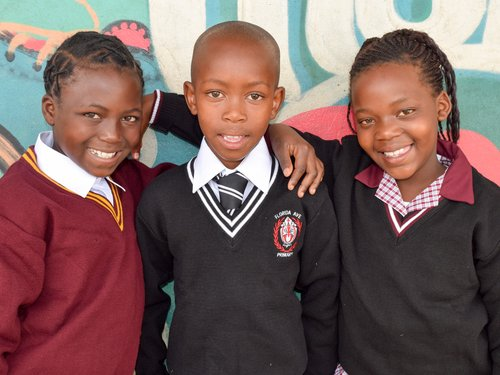

OUR PROGRAMS
OUR PROGRAMS
TUTORING

Education is crucial for achieving success in life, and that's why KYP centers its efforts around our tutoring program. Children from Grade 1 to Grade 12 participate in tutoring and study sessions for two hours each afternoon, Monday through Thursday. The program emphasizes English and math, along with homework support. Primary school students receive tutoring from community members who have completed KYP's training program. These tutors are not only equipped to teach the necessary content but also receive training in child development and effective classroom management. High school students are tutored by professional teachers twice a week and engage in peer-to-peer tutoring on the other two days. Our primary objective is for our Grade 12 students to successfully pass their matriculation exams at the end of their senior year. While only about one-third of Kliptown residents typically pass their matric exams, our tutoring program has helped over 80% of KYP members achieve this milestone.
SCHOOL FEE AND UNIFORM SUPPORT

Most families in Kliptown struggle to cover the expenses of school fees, uniforms, books, and supplies for their children. Since its founding, KYP has taken on the responsibility of paying school fees for all its members. We wold like to thanks to our supporters at Tailored for education, every child who has been with us for the past year receives a new uniform at the beginning of the school year.
FOOD PROGRAM
.jpg)
A significant challenge in Kliptown is the lack of proper nutrition for children, with many not having access to even a single balanced meal each day. Recognizing that hunger hampers effective learning, KYP ensures that all members receive two nutritious meals daily. In the morning, children can either have breakfast at the center or take a packed lunch to school. They then enjoy a hot meal before engaging in their tutoring sessions and other KYP activities.
ONLINE LEARNING
Technology has become a vital part of our tutoring program. With tools like Reading Eggs, Math Seeds, Olico, MyCyberwall, and 2Enable, our members can enhance their skills through engaging lessons and quizzes that provide immediate feedback. Since the community lacks electricity, we use a solar array installed on the roof of our classrooms to power our center. Additionally, KYP offers free computer classes on internet skills and Microsoft Office to community members to assist them in accessing job opportunities.
TERTIARY EDUCATION PROGRAM
Thanks to the success of the tutoring program, many KYP members are well-prepared and enthusiastic about pursuing higher education. Our tertiary education program offers financial assistance to students who would otherwise be unable to attend university. Students have pursued various fields of study, including Information Technology, Banking, Electrical Engineering, and Marketing, through programs ranging from one- to two-year certificates to three- to four-year degrees. KYP supports these students by helping with bursary (financial aid) applications and providing direct financial support through Study Trust, which also offers mentorship to our university students.
VOCATIONAL PROGRAM
As KYP members finish their university, college, or high school education, they face the crucial step of entering the job market, which is essential for overcoming poverty. KYP’s leadership helps connect them with learnerships (internships) and job opportunities. Companies like Tradesure Insurance, Bidvest Pureau, and others have provided valuable opportunities and guidance. Additionally, members gain significant insights from professionals who visit the center to discuss the skills, education, and training required for success in various careers.
PERFORMING ARTS AND CULTURE AND SPORTS
Children need opportunities for fun and physical activity, so we dedicate Fridays to our Performing Arts and Culture, as well as our Sports programs. Members can engage in various cultural activities, including dancing and drumming. Our famous Gumboots Dance group, which includes both boys and girls, has been performing at major events across South Africa and internationally since the beginning of KYP. This group not only inspires audiences worldwide and aids our fundraising efforts but also provides members with the incredible chance to travel globally. Additionally, members can join soccer and netball teams. Highly skilled coaches mentor the children, focusing not only on the technical skills of the sports but also on important life skills like perseverance and teamwork. These teams compete in township leagues and have achieved numerous tournament victories.
PSYCHOSOCIAL SUPPORT PROGRAM
In any community, there is a significant need for services that address family and school-related concerns for both children and parents. At KYP, we have established a support center where members and their families can receive advice from counselors in a safe and confidential setting. The center addresses a wide range of issues, including behavioral problems in children, school difficulties, family violence, substance abuse, teenage pregnancy, crime, poverty, and HIV/AIDS, among others. It also offers academic and career assessments and support services. Currently, the support is provided by students from the University of Johannesburg who are pursuing either their Honours degree in Counselling or their Master’s degree in Educational Psychology.
LIBRARY
KYP students and community members have access to a growing library where they can choose books to read. The library offers a range of materials, including picture books for younger children, fiction and non-fiction for older students, and many of the textbooks used in their school classes.